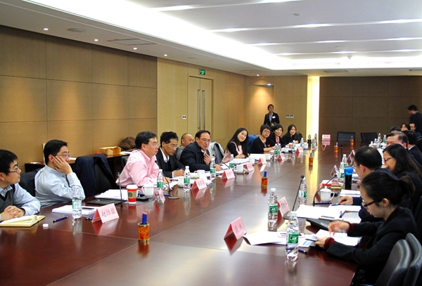

中注协召开审计报告系列准则论证会
2015-12-02 04:06
2015年11月27日，中注协召开审计报告系列准则论证会，中注协副秘书长杨志国出席会议，来自相关政府部门、会计师事务所、投资银行及高校的近30名专家参加会议。
杨志国副秘书长表示，金融危机后，国际上对于提高审计质量、提升审计报告信息含量的呼声日趋强烈。2014年欧盟出台了新的审计指令，在对公众利益实体的监管要求中明确提出审计师须出具更具“信息量”的审计报告；美国的审计准则制定机构也正在进行相关改革。2015年年初，国际审计与鉴证准则理事会发布了新制定（修订）的审计报告系列准则，其中最大的变化是要求审计师在为上市公司财务报表出具的审计报告中，就关键审计事项进行沟通，目的是大力加强审计报告对投资者和其他财务报告使用者的效用，为其决策提供更多有用信息。经济全球化要求我们顺应这一发展潮流。另一方面，我国资本市场的改革和注册制的推行，将进一步要求提升审计质量，提高审计报告的决策有用性。然而，目前审计报告的相关性和决策有用性较差，高度标准化的报告形式体现不出审计工作的价值，对审计报告进行改革已是大势所趋。此次准则修订，旨在以审计报告为突破口，提升审计的质量和透明度。
与会专家一致认为，此次审计报告准则改革，是注册会计师行业的重大变革，既是机遇，也是挑战。此次准则修订，不仅体现了我国对国际准则重大变革的积极吸收，也有利于提高审计报告的相关性和价值，提升审计质量，充分发挥注册会计师在资本市场变革中的重要作用。同时，注册会计师与会计师事务所也要在思想与技术方面作好准备，以应对挑战。此外，与会专家围绕准则文本及实施的具体问题进行了充分讨论，提出了意见和建议。
为了提高审计报告对投资者和其他财务报告使用者的沟通价值，中注协于2015年1月启动了《中国注册会计师审计准则第1151号——与治理层的沟通》、《中国注册会计师审计准则第1324号——持续经营》、《中国注册会计师审计准则第1501号——对财务报表形成审计意见和出具审计报告》、《中国注册会计师审计准则第1502号——在审计报告中发表非无保留意见》、《中国注册会计师审计准则第1503号——在审计报告中增加强调事项段和其他事项段》、《中国注册会计师审计准则第1504号——在审计报告中沟通关键审计事项》及《中国注册会计师审计准则第1521号——注册会计师对其他信息的责任》等7项审计准则的修订（制定）工作。其间，对准则文本进行了多次讨论，并于2015年10月举办研讨班，听取了实务界专家的意见和建议。此次论证会后，中注协将对准则文本作进一步修改完善，并提交审计准则委员会审议，预计年底发布征求意见稿。

中注协召开审计报告系列准则论证会
 京公网安备 11010802022122号
京公网安备 11010802022122号